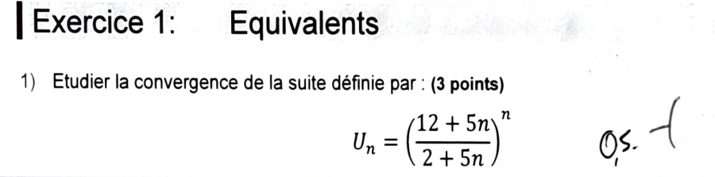
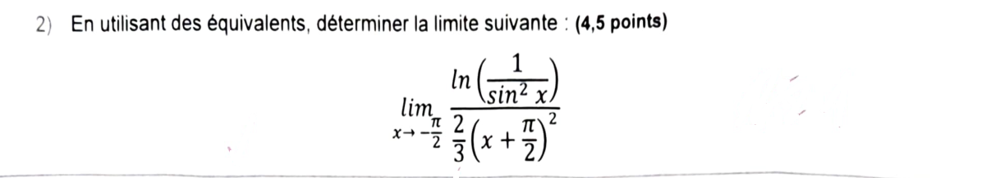
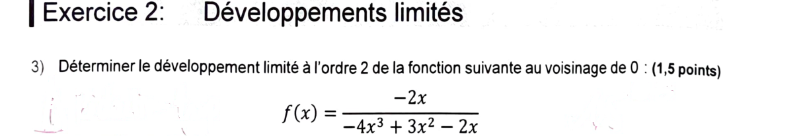
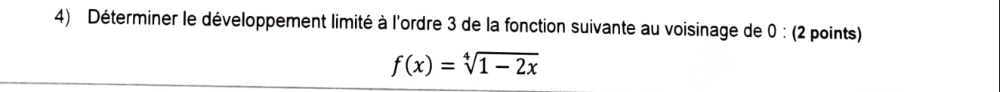
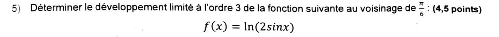
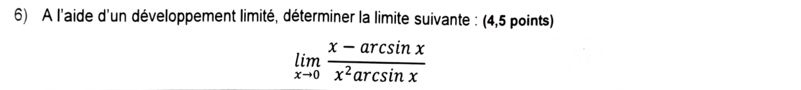

Interrogation n°1 de cette année — corrigé complet
Interrogation n°1 d'A&M2 (lundi 21 septembre 2026) : 45 min, sur 20 points, aucun document ni appareil électronique. Deux exercices : équivalents (2 questions, 7,5 pts) et développements limités (4 questions, 12,5 pts). Aucun corrigé officiel : tout est résolu ici et vérifié par calcul formel. L'énoncé de chaque question (image) est juste au-dessus de sa correction.
Exercice 1 — Équivalents · 7,5 pts

Forme indéterminée. La base \(\dfrac{12+5n}{2+5n}\to1\) et l'exposant \(n\to+\infty\) : forme \(1^\infty\). On passe à l'exponentielle : \[ U_n=\exp\big(n\ln(\text{base})\big). \]
Écrire la base comme \(1+\)(quelque chose qui tend vers 0). \[ \frac{12+5n}{2+5n}=\frac{(2+5n)+10}{2+5n}=1+\frac{10}{5n+2}. \] Ici \(v_n=\dfrac{10}{5n+2}\to0\).
Équivalent du logarithme. Comme \(v_n\to0\), \(\ln(1+v_n)\sim v_n\) (car \(\ln(1+v)\sim v\) quand \(v\to0\)).
Équivalent de l'exposant, puis sa limite. \[ n\ln\!\Big(1+\frac{10}{5n+2}\Big)\sim\frac{10n}{5n+2}\ \xrightarrow[n\to+\infty]{}\ \frac{10}{5}=2. \] Un équivalent d'une suite qui a une limite finie \(\ell\) a la même limite : l'exposant tend vers \(2\).
Conclusion. Par continuité de l'exponentielle :
Contrôle numérique. \(n=10^6\) : \(U_n\approx7{,}38904\) et \(e^2\approx7{,}38906\). ✔
Interprétation. C'est la version « discrète » de \(\left(1+\frac{a}{n}\right)^n\to e^{a}\) : ici \(\frac{10}{5n+2}\approx\frac{2}{n}\), donc \(a=2\).

Changement de variable. On pose \(X=x+\dfrac\pi2\). Alors \(x\to-\dfrac\pi2\iff X\to0\), et \(\dfrac23\big(x+\frac\pi2\big)^2=\dfrac23X^2\).
Réécriture de \(\sin x\). \(x=X-\dfrac\pi2\), donc \[ \sin x=\sin\!\Big(X-\frac\pi2\Big)=-\cos X \qquad(\text{car }\sin(\theta-\tfrac\pi2)=-\cos\theta). \] Donc \(\sin^2x=\cos^2X=1-\sin^2X\).
Numérateur. \(\ln\!\Big(\dfrac1{\sin^2x}\Big)=-\ln(\sin^2x)=-\ln\big(1-\sin^2X\big)\).
Équivalents. \(\sin^2X\to0\), donc \(\ln(1-\sin^2X)\sim-\sin^2X\) (c'est \(\ln(1+v)\sim v\) avec \(v=-\sin^2X\to0\)). Donc \[ -\ln(1-\sin^2X)\sim\sin^2X\sim X^2, \] car \(\sin X\sim X\) et un équivalent peut être élevé au carré.
Quotient. Un quotient d'équivalents est un équivalent : \[ \frac{-\ln(1-\sin^2X)}{\frac23X^2}\sim\frac{X^2}{\frac23X^2}=\frac32. \]
Contrôle (autre méthode). \(\ln(\cos^2X)=2\ln(\cos X)\) et \(\cos X=1-\frac{X^2}{2}+o(X^2)\), donc \(\ln\cos X=-\frac{X^2}{2}+o(X^2)\). Le numérateur vaut \(-2\ln\cos X=X^2+o(X^2)\) : on retrouve \(\dfrac{X^2}{\frac23X^2}=\dfrac32\). ✔
- \(\sin\big(X-\frac\pi2\big)=-\cos X\), et non \(-\sin X\) ni « \(1-\sin X\) ». On vérifie toujours avec une valeur : en \(X=0\), \(\sin(-\frac\pi2)=-1=-\cos0\). ✔
- Le \(\ln\) est appliqué à \(\sin^2x\) (donc au carré) : on ramène à \(\ln(1-\text{petit})\) grâce à \(\cos^2=1-\sin^2\), sinon \(\ln(\cos^2X)\) est de la forme \(\ln(1)\) sans équivalent direct.
- On ne sait pas « additionner » des équivalents. Ici il n'y a que des produits/quotients/puissances, c'est licite.
- Le signe : le numérateur \(-\ln(\sin^2x)\) est positif (car \(\sin^2x\le1\)), la limite ne peut donc pas être négative ni \(\pm\infty\) sans raison.
Exercice 2 — Développements limités · 12,5 pts

Étape 1 — Simplifier avant tout. Pour \(x\neq0\), on divise numérateur et dénominateur par \(-2x\) : \[ f(x)=\frac{1}{2x^2-\frac32x+1}=\frac{1}{1-\frac32x+2x^2}. \] (Vérification : \(\frac{-4x^3}{-2x}=2x^2\), \(\frac{3x^2}{-2x}=-\frac32x\), \(\frac{-2x}{-2x}=1\).)
Étape 2 — Forme \(\dfrac1{1+u}\). On pose \(u=-\dfrac32x+2x^2\to0\). Formule : \(\dfrac1{1+u}=1-u+u^2+o(u^2)\).
Étape 3 — Puissances de \(u\) à l'ordre 2. \[ u=-\frac32x+2x^2,\qquad u^2=\frac94x^2+o(x^2)\quad(\text{les termes en }x^3,x^4\text{ sont des }o(x^2)). \]
Étape 4 — Assemblage. \[ f(x)=1-\Big(-\frac32x+2x^2\Big)+\frac94x^2+o(x^2)=1+\frac32x+\Big(-2+\frac94\Big)x^2+o(x^2). \] Or \(-2+\dfrac94=\dfrac{-8+9}{4}=\dfrac14\).
Contrôle numérique. \(x=0{,}01\) : \(f=\dfrac1{1-0{,}015+0{,}0002}=\dfrac1{0{,}9852}\approx1{,}015022\) ; le DL donne \(1+0{,}015+0{,}000025=1{,}015025\) (écart en \(x^3\)). ✔

Cadre. \(\sqrt[4]{1-2x}=(1+u)^{1/4}\) avec \(u=-2x\to0\), donc \(\alpha=\dfrac14\).
Coefficients du binôme généralisé.
\[ \binom{\alpha}{1}=\frac14,\qquad \frac{\alpha(\alpha-1)}{2}=\frac{\frac14\cdot\left(-\frac34\right)}{2}=-\frac{3}{32},\qquad \frac{\alpha(\alpha-1)(\alpha-2)}{6}=\frac{\frac14\cdot\left(-\frac34\right)\cdot\left(-\frac74\right)}{6}=\frac{21/64}{6}=\frac{7}{128}. \]Remplacement. \(u=-2x\), \(u^2=4x^2\), \(u^3=-8x^3\) : \[ (1-2x)^{1/4}=1+\frac14(-2x)-\frac3{32}(4x^2)+\frac7{128}(-8x^3)+o(x^3). \] Terme par terme : \(\frac14\cdot(-2)=-\frac12\) ; \(-\frac{3}{32}\cdot4=-\frac38\) ; \(\frac{7}{128}\cdot(-8)=-\frac{7}{16}\).
Contrôle numérique. \(x=0{,}01\) : \(\sqrt[4]{0{,}98}\approx0{,}9949621\) ; le DL donne \(1-0{,}005-0{,}0000375-0{,}000000438\approx0{,}9949621\) (écart \(\sim10^{-8}\), de l'ordre de \(x^4\)). ✔
- Toujours simplifier les fractions finales : \(\frac{21}{48}=\frac{7}{16}\) (on divise par 3 en haut et en bas), \(\frac24=\frac12\). Une réponse non simplifiée est sanctionnée.
- Les signes : \(\alpha-1=-\frac34\) et \(\alpha-2=-\frac74\) sont négatifs, et \(u^3=(-2x)^3=-8x^3\) : trois signes « − » se compensent pour le terme en \(x^3\).
- \(\sqrt[4]{\cdot}\) c'est la puissance \(\frac14\), pas \(\frac12\).

Étape 1 — Revenir en 0. On pose \(X=x-\dfrac\pi6\), donc \(x=X+\dfrac\pi6\) et \(X\to0\). Le DL se fait en \(X\) : \[ f(x)=\ln\!\Big(2\sin\!\big(X+\tfrac\pi6\big)\Big). \]
Étape 2 — Formule d'addition. \[ \sin\!\Big(X+\frac\pi6\Big)=\sin X\cos\frac\pi6+\cos X\sin\frac\pi6=\frac{\sqrt3}{2}\sin X+\frac12\cos X. \] Donc \(2\sin\big(X+\frac\pi6\big)=\sqrt3\sin X+\cos X\).
Étape 3 — DL₃ de l'intérieur. \(\sin X=X-\dfrac{X^3}{6}+o(X^3)\) et \(\cos X=1-\dfrac{X^2}{2}+o(X^3)\) : \[ \sqrt3\sin X+\cos X=1+\sqrt3X-\frac{X^2}{2}-\frac{\sqrt3}{6}X^3+o(X^3). \]
Étape 4 — On pose \(u\) et on applique \(\ln(1+u)\). \[ u=\sqrt3X-\frac{X^2}{2}-\frac{\sqrt3}{6}X^3+o(X^3)\to0,\qquad \ln(1+u)=u-\frac{u^2}{2}+\frac{u^3}{3}+o(u^3). \] Puissances de \(u\) (on garde jusqu'à \(X^3\)) : \[ u^2=\big(\sqrt3X\big)^2+2\cdot\sqrt3X\cdot\Big(-\frac{X^2}{2}\Big)+o(X^3)=3X^2-\sqrt3X^3+o(X^3), \] \[ u^3=\big(\sqrt3X\big)^3+o(X^3)=3\sqrt3X^3+o(X^3). \]
Étape 5 — Assemblage. \[ \ln(1+u)=\Big(\sqrt3X-\frac{X^2}{2}-\frac{\sqrt3}{6}X^3\Big)-\frac12\big(3X^2-\sqrt3X^3\big)+\frac13\big(3\sqrt3X^3\big)+o(X^3). \] Regroupement par puissance :
- \(X\) : \(\sqrt3\) ;
- \(X^2\) : \(-\dfrac12-\dfrac32=-2\) ;
- \(X^3\) : \(-\dfrac{\sqrt3}{6}+\dfrac{\sqrt3}{2}+\sqrt3=\sqrt3\Big(-\dfrac16+\dfrac36+\dfrac66\Big)=\dfrac{8\sqrt3}{6}=\dfrac{4\sqrt3}{3}\).
Contrôle. Le terme constant est \(\ln(2\sin\frac\pi6)=\ln1=0\) ✔ (le DL commence bien à l'ordre 1). Le terme en \(X\) est \(f'(\frac\pi6)=\cot\frac\pi6=\sqrt3\) ✔ (car \(f'(x)=\frac{\cos x}{\sin x}\)). Le terme en \(X^2\) est \(\frac{f''}{2}\) avec \(f''=-\frac{1}{\sin^2x}=-4\) en \(\frac\pi6\) : \(\frac{-4}{2}=-2\) ✔.
- Le DL se fait en \(X\), pas en \(x\) : écrire « \(\sqrt3x-\frac{x^2}{2}\ldots\) » (avec \(x\) au lieu de \(X\)) est faux, car \(x\) ne tend pas vers 0. À la fin, on écrit \(X=x-\frac\pi6\).
- Dans \(u^2\), il faut le double produit \(2\cdot\sqrt3X\cdot(-\frac{X^2}{2})=-\sqrt3X^3\) : il contribue à l'ordre 3. L'oublier fausse le coefficient de \(X^3\).
- Ne pas oublier \(\frac{u^3}{3}\) : \(u^3\) commence en \(X^3\) donc il compte à l'ordre 3.
- Le DL d'ordre 3 doit contenir tous les termes jusqu'à \(X^3\) (donc 3 coefficients non nuls ici) ; un résultat s'arrêtant à \(X^2\) est incomplet.

Étape 1 — DL de \(\arcsin\) à l'ordre 3. \(\arcsin'(x)=\dfrac1{\sqrt{1-x^2}}=(1-x^2)^{-1/2}\). Avec \(u=-x^2\) et \(\alpha=-\dfrac12\) : \[ (1+u)^{-1/2}=1-\frac12u+o(u)\ \Longrightarrow\ \arcsin'(x)=1+\frac{x^2}{2}+o(x^2). \] On intègre le DL (autorisé), avec \(\arcsin0=0\) : \[ \arcsin x=x+\frac{x^3}{6}+o(x^3). \]
Étape 2 — Numérateur. \[ x-\arcsin x=-\frac{x^3}{6}+o(x^3)\ \sim\ -\frac{x^3}{6}. \]
Étape 3 — Dénominateur. \(\arcsin x\sim x\), donc \(x^2\arcsin x\sim x^3\).
Étape 4 — Quotient. \[ \frac{x-\arcsin x}{x^2\arcsin x}\sim\frac{-\frac{x^3}{6}}{x^3}=-\frac16. \]
Contrôle. Avec le DL à l'ordre 5, \(\arcsin x=x+\frac{x^3}6+\frac{3x^5}{40}+o(x^5)\) : numérateur \(-\frac{x^3}{6}-\frac{3x^5}{40}\), dénominateur \(x^3+\frac{x^5}{6}\), le quotient vaut \(-\frac16+O(x^2)\to-\frac16\). ✔
- Choix de l'ordre. Le dénominateur est en \(x^3\) : il faut un numérateur au moins à l'ordre 3 pour avoir un terme non nul. Un DL à l'ordre 1 (\(\arcsin x=x+o(x)\)) donnerait \(x-\arcsin x=o(x)\) : inexploitable (forme \(\frac00\)).
- Ne pas remplacer \(\arcsin x\) par \(x\) dans le numérateur d'une différence : \(x-\arcsin x\sim0\) n'a aucun sens. On n'utilise l'équivalent \(\arcsin x\sim x\) que dans les produits/quotients (ici au dénominateur).
- La dérivée de \(\arcsin\) est \(\dfrac1{\sqrt{1-x^2}}\) (et non \(\frac1{1-x^2}\)) : d'où \(\alpha=-\frac12\). On arrête le développement de \((1+u)^{-1/2}\) à l'ordre 1 car on intègre ensuite (l'intégration monte l'ordre de 1).
Bilan — réponses finales
| Question | Barème | Réponse |
|---|---|---|
| Q1 \(\left(\frac{12+5n}{2+5n}\right)^n\) | 3 | converge vers \(e^{2}\) |
| Q2 limite en \(-\pi/2\) | 4,5 | \(\dfrac32\) |
| Q3 DL₂ \(\frac{-2x}{-4x^3+3x^2-2x}\) | 1,5 | \(1+\frac32x+\frac14x^2+o(x^2)\) |
| Q4 DL₃ \(\sqrt[4]{1-2x}\) | 2 | \(1-\frac12x-\frac38x^2-\frac7{16}x^3+o(x^3)\) |
| Q5 DL₃ \(\ln(2\sin x)\) en \(\frac\pi6\) | 4,5 | \(\sqrt3X-2X^2+\frac{4\sqrt3}{3}X^3+o(X^3)\), \(X=x-\frac\pi6\) |
| Q6 \(\frac{x-\arcsin x}{x^2\arcsin x}\) | 4,5 | \(-\dfrac16\) |
- Forme \(1^\infty\) : passer par \(\exp(n\ln(\dots))\), écrire la base \(1+v\), utiliser \(\ln(1+v)\sim v\), calculer la limite de l'exposant, jamais d'équivalent « dans » l'exponentielle.
- Limite avec \(\ln\) en un point \(a\neq0\) : poser \(X=x-a\), réécrire par les formules trigonométriques (\(\sin(X-\frac\pi2)=-\cos X\)), se ramener à \(\ln(1+v)\) avec \(v\to0\).
- Fraction rationnelle : simplifier d'abord (ici par \(-2x\)), puis \(\frac1{1+u}=1-u+u^2\).
- Racine / puissance : binôme généralisé \((1+u)^\alpha\), signes des \(\alpha-k\), simplifier les fractions finales.
- DL en \(a\neq0\) : DL en \(X=x-a\), tous les termes jusqu'à l'ordre demandé, double produit dans \(u^2\), \(u^3\) à garder.
- Limite d'un quotient par DL : choisir l'ordre pour que le premier terme non nul apparaisse (dénominateur en \(x^3\) ⇒ numérateur à l'ordre 3) ; \(\arcsin x=x+\frac{x^3}6+o(x^3)\).
- Rédaction : chaque étape justifiée (« \(u\to0\) donc… »), résultat final encadré et simplifié.
📂 Documents donnés
Sujet de l'interro tel qu'il figure sur le scan reçu (énoncés nettoyés).
Interro n°1 — 21/09/2026
La copie scannée annotée reste en local et n'est pas publiée : les énoncés ci-dessus sont reconstitués à partir de découpes nettoyées.